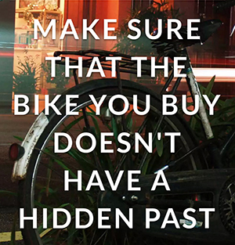

Check That Bike wins Crime & Justice Open Data Challenge
 Last night we announced the winner of the first challenge in the Open Data Challenge Series, being run by Nesta and the Open Data Institute. Check That Bike, run by John Moss, has developed an innovative open data service to help cyclists check whether a bike is stolen. Using the unique frame number of the bike and with the aid of a smartphone, cyclists are able to make a better decision about buying a second hand bike at the time they’re actually buying it.
John’s idea to disrupt the market in stolen bikes is a credible new example of how open data released by the public sector can be developed into services which are both socially useful and sustainable businesses.
Check That Bike faced competition from Total Car Check, and Pesky People, a team who are developing an app to help deaf people communicate with the Emergency Services using geo-location data.
Broader social impacts
Around half a million bikes are stolen in the UK every year, with only a tiny number recovered and returned to the owner. These thefts cost cyclists (an estimated £140 million a year) as well as meaning that they are more likely to give up cycling or cycle less often. John’s winning idea aims to incentivise cyclists to report thefts in the first instance, as well as help the police return stolen bikes.
A service like Check That Bike will help change behaviour in the cycling community with cyclists now seeing the point of making a record of their frame number when they buy a new bike, as well as using the service at the point at which they buy a second hand bike.
By helping to combat bike theft, John’s idea will help to tackle one of the main reasons that people don’t take up cycling - the fear of getting their bike stolen. In it’s own way, this will help to contribute to the broader moves by government and others to get more people to see the health benefits of taking up cycling.
New direction for Crime and Justice open data innovation
One of the reasons why the judges felt that John’s idea was particularly innovative was that it provided an example of how opening up data could support the public task of the organisations releasing data. Check That Bike is not only providing a service to cyclists but by changing the behaviour of cyclists could also impact the way police approach this category of crime - using their data to help disrupt the market for stolen goods.
And it isn’t an approach that applies just to stolen bikes, but could also to other types of stolen property and hence, build a new range of services which we would all use to check whether something we’re buying is stolen or not.
Indeed, this service is already available for stolen cars, and another finalist in the Challenge, Total Car Check, is developing as service which will pull in open data on stolen cars if and when it becomes available.
This is the crux of the issue, in that supporting approaches to tackling crime in this way is dependent on the police becoming comfortable with making data available. In the case of Check That Bike there is at least one police force actively considering the release of the stolen bikes data - the West Midlands.
To hear interviews with the other finalists, follow this link.